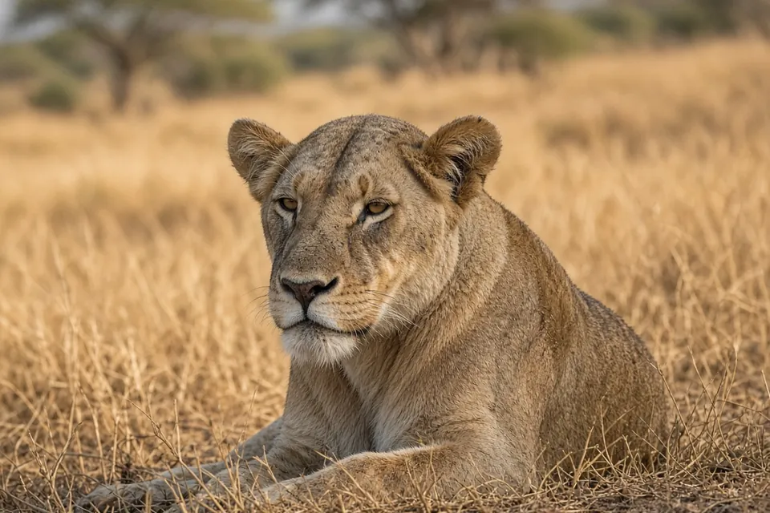

Home › Blog › How many hours do lions sleep?
How Many Hours Do Lions Sleep?
Lions rest for up to 21 hours a day, which makes them some of the laziest looking big cats. Most of that time is resting in the shade rather than deep sleep, and it is balanced by short bursts of intense activity.

Most of a lion's day is spent lying down
The San Diego Zoo Wildlife Alliance describes much of a lion's life as sleeping and resting: short bursts of intense activity followed by long bouts of lying around that add up to as much as 21 hours in a day. BBC Earth gives the same figure, saying lions rest for up to 21 hours a day.
A lion fact sheet from the International Environment Library Consortium, which cites field work by George Schaller in 1972, says wild lions may rest up to 20 to 21 hours per day on average. Those are the upper figures, so a given lion on a given day may rest less.
Rest is not the same as sleep
These figures count resting, not only sleeping. A lion lying in the shade with its eyes half shut is saving energy even if it is not fully asleep. The same fact sheet notes that lions in zoos sleep about 10 to 15 hours, citing a 1958 study by Haas, so the number depends on how you measure it and where the lions live.
When you read that lions "sleep 20 hours a day", it is more accurate to say they spend most of the day inactive and sleep for part of it.
Why lions rest so much
The fact sheet lists long rest among the behaviors that help lions conserve energy. Lions are active early and late in the day and at night, and they avoid the heat of the day. They commonly rest and sleep in shade, often in compact groups, and that quiet time is interrupted by periods of intense activity such as hunting or defending the pride.
Hunting is hard work and often fails, so a lifestyle of long rests and short efforts makes sense for a large predator. You can read more about how pride life works in our guide to why lions live in prides.
Do males and females rest the same amount?
BBC Earth says males sleep for longer periods than females. The sources we checked do not give separate hour counts for each sex, so we cannot say by how much.
What this means when you watch lions
If you visit a reserve or a zoo and the lions look asleep, that is normal behavior rather than a sign of illness. Activity peaks around dawn, dusk and night, so those are the better times to see lions moving.
Frequently asked questions
How many hours a day do lions sleep?
Wild lions can rest for up to 20 to 21 hours a day, though part of that is resting while awake. Zoo lions are reported to sleep about 10 to 15 hours.
Why do lions sleep so much?
Resting helps them conserve energy between short bursts of hunting or defending the pride, and they avoid the heat of the day.
When are lions most active?
Early and late in the day and at night, according to a lion behavior fact sheet.
Do male lions sleep more than females?
BBC Earth says males sleep for longer periods than females.
Cite this page
APA: BigCatWise. (2026, November 11). How many hours do lions sleep?. https://bigcatwise.com/blog/how-many-hours-do-lions-sleep.html
MLA: "How many hours do lions sleep?." BigCatWise, 11 Nov. 2026, bigcatwise.com/blog/how-many-hours-do-lions-sleep.html.
Chicago: BigCatWise. "How many hours do lions sleep?." Last modified November 11, 2026. https://bigcatwise.com/blog/how-many-hours-do-lions-sleep.html.
Please check the date you accessed the page and adjust to your teacher's or journal's style guide.